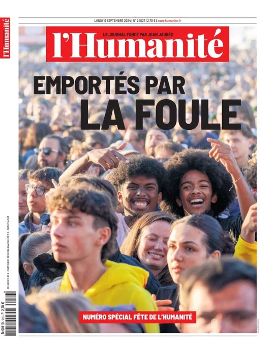
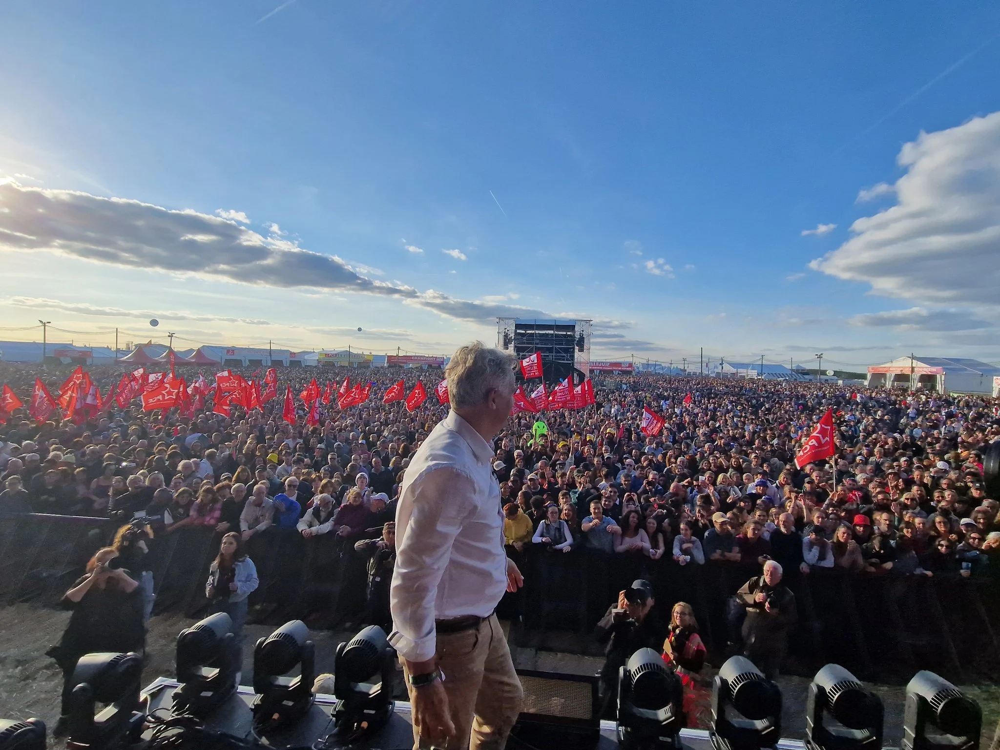
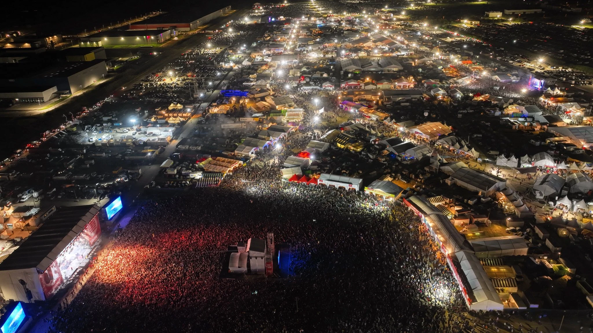

Reportage relayé
La Fête de L’Humanité 2024 en images
Date indiquée par Facebook · 16 septembre 2024
Repères éditoriaux
Nous avons publié une une de L’Humanité et deux vues de la Fête. La vidéo du meeting de Fabien Roussel figure dans la publication associée.
Texte conservé avec la publication
Fête de L'Humanité



Sources
Archive rouge · export Facebook · AR-0002-FB-01294
À lire aussi · Fête de L’Humanité 2024. Le meeting de Fabien Roussel · Le lien vidéo